LINE 快捷登录配置教程：
1.先到LINE Developers登录账号（账号需要自行注册）
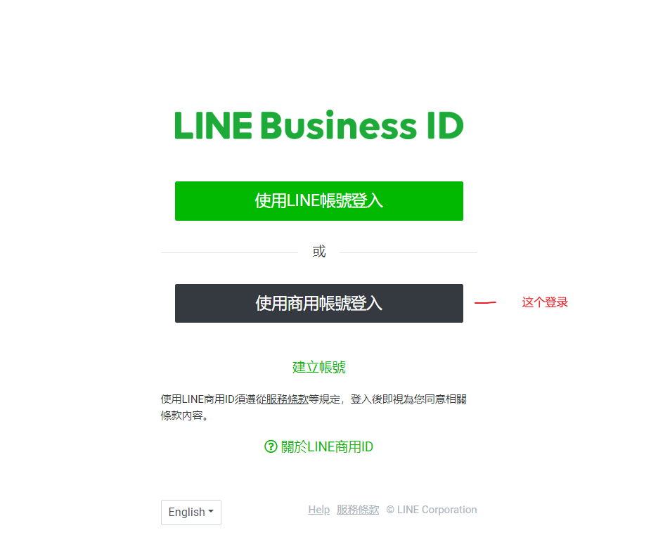
2.创建一个提供者
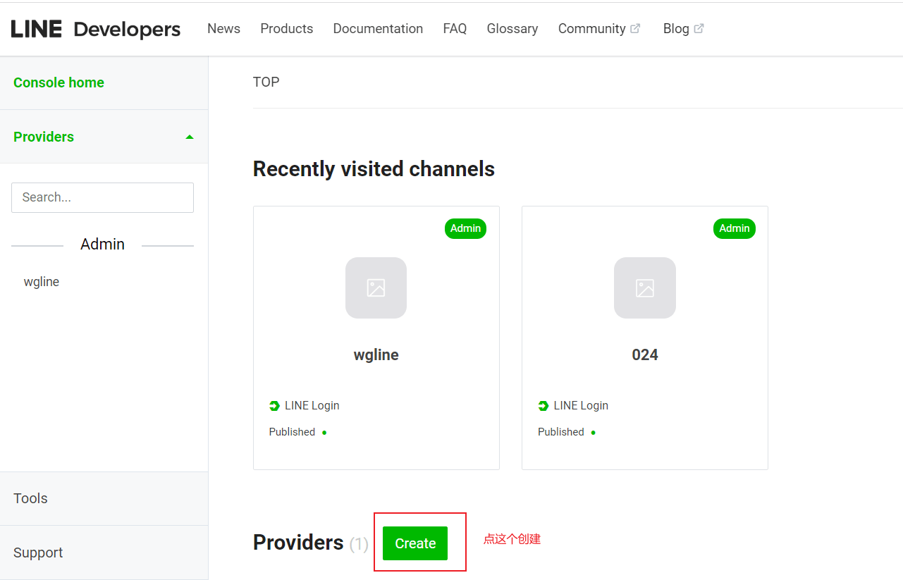
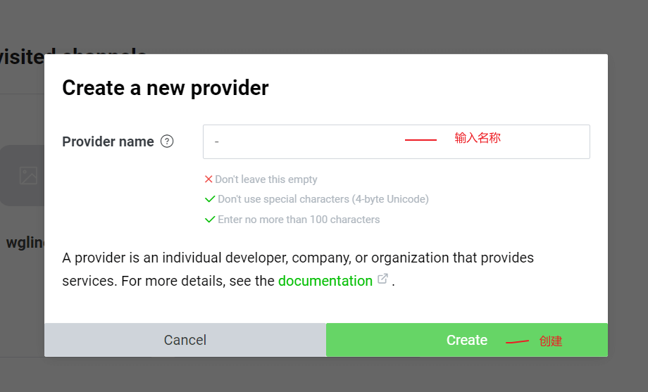
3.选择创建Login channel
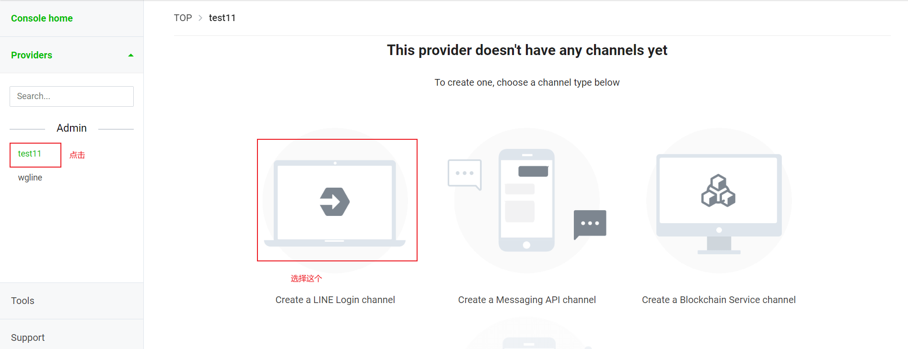
4.填写资料（填写的资料可以自定义内容，不用与参考一致）
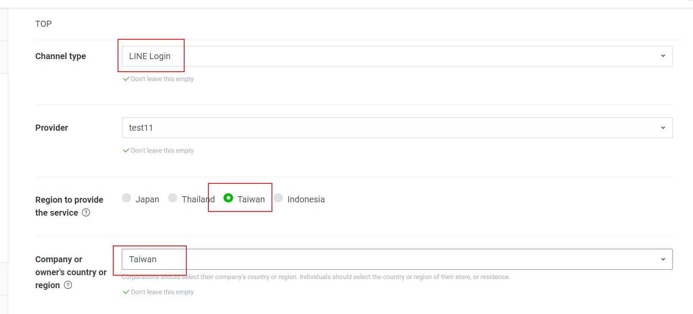
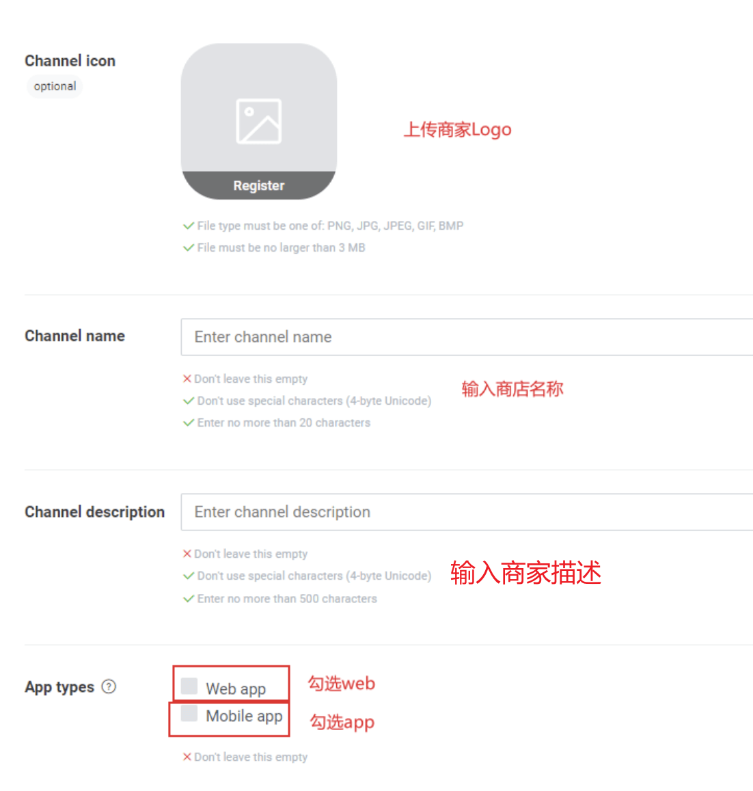
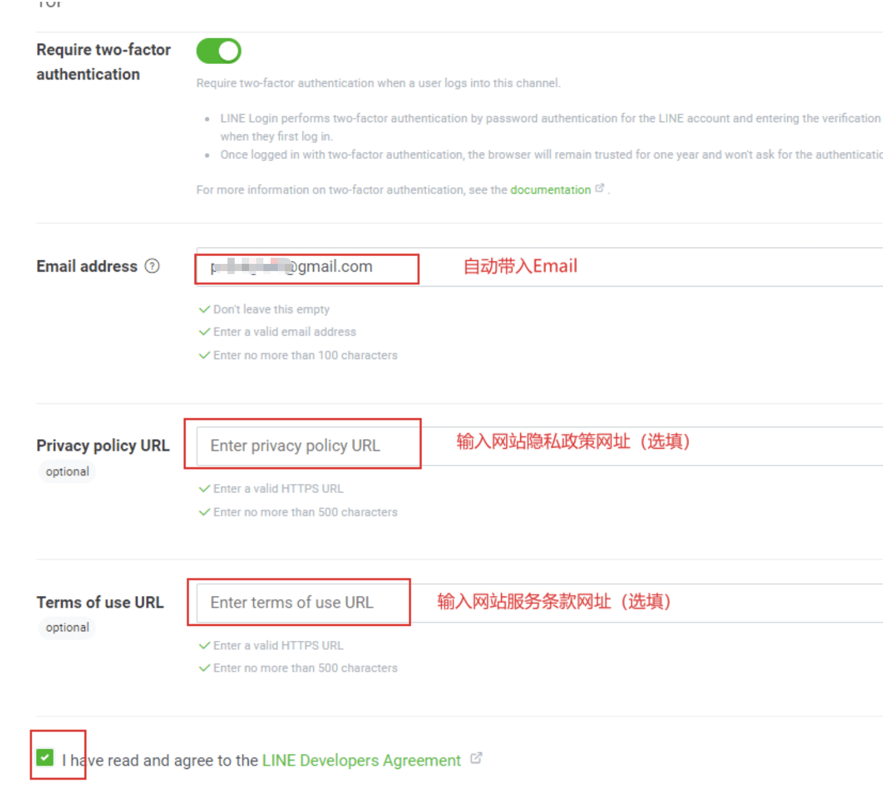
5.改变状态
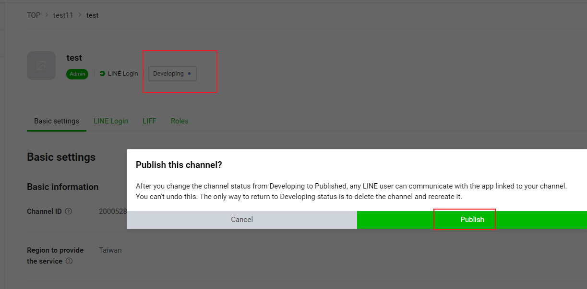
6.设置完之后滑动到最底下
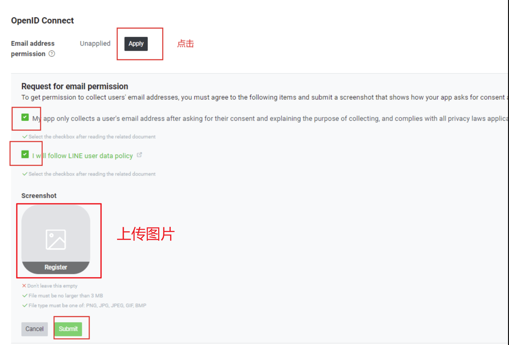
7.设置Callback地址（授权登录的域名）
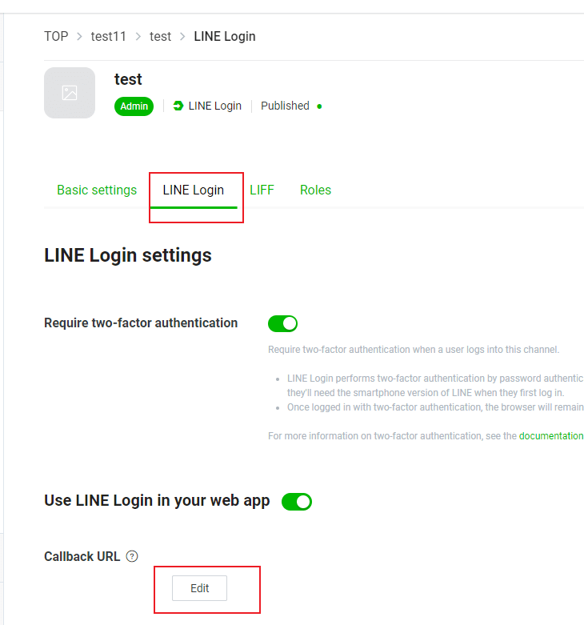
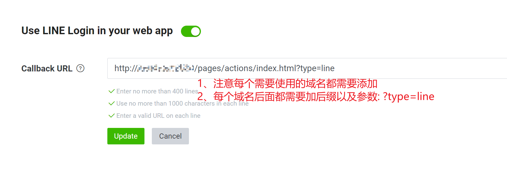
如https://www.xxx.com
按照格式 域名+/pages/actions/index.html?type=line
则需要填写https://www.xxx.com/pages/actions/index.html?type=line
这个不填写，登录会看到400的错误提示
8.安卓和ios包配置
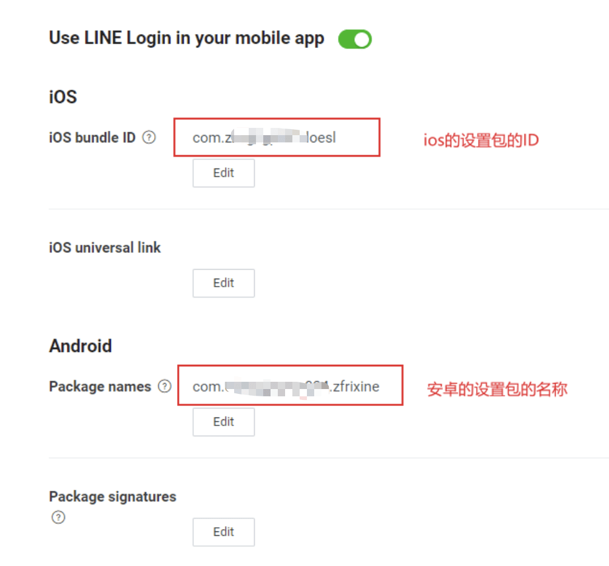
9.填写完之后回到第一个选项卡复制Channel ID和Channel secret
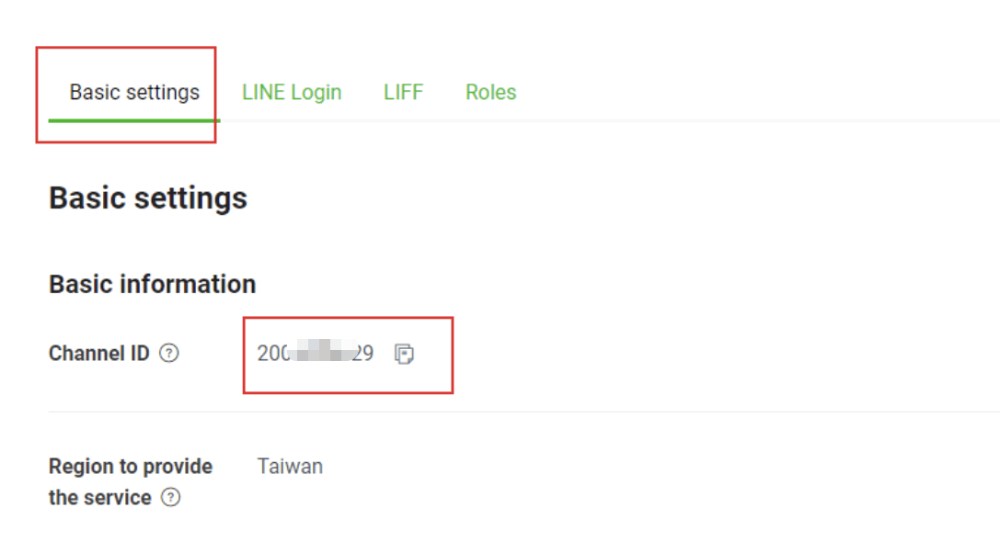
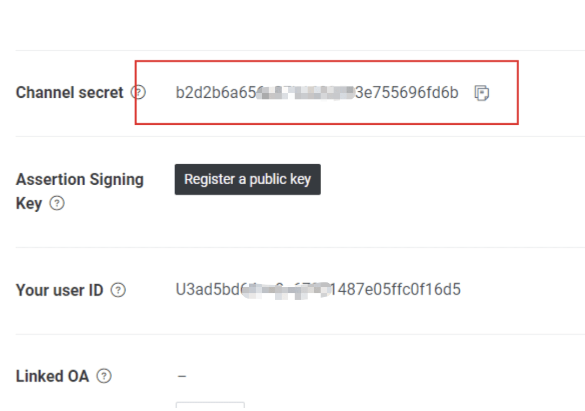
10.配置后台
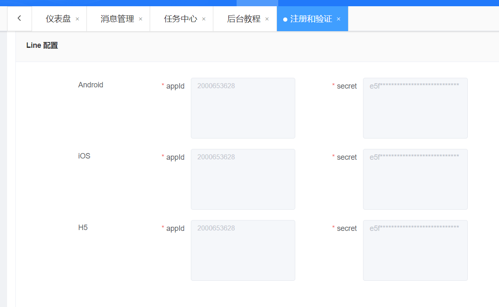
把Line开发者中的Channel ID配置到appId中，Channel secret配置到secret中；Android、iOS、web/h5的配置都一样。